プリントワールドでご提供しているプリント方法についてご案内いたします。
DTFプリントとは
DTFとはDirect To Filmと呼ばれる、専用の特殊なフィルムにデザインをプリントし、熱を加えて生地に転写をさせる印刷方法です。
複雑なデザインをフルカラーで綺麗に表現できることが最大の特徴です。
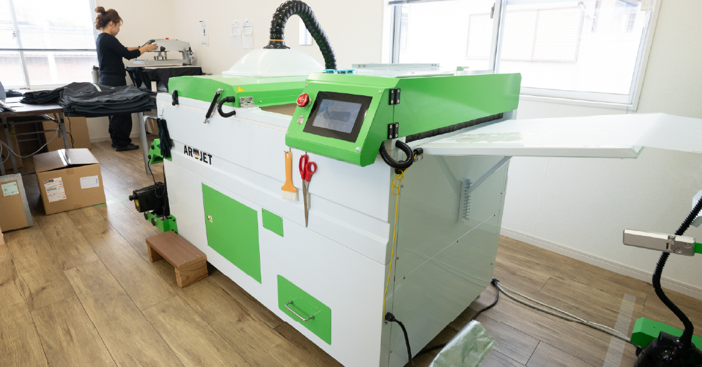
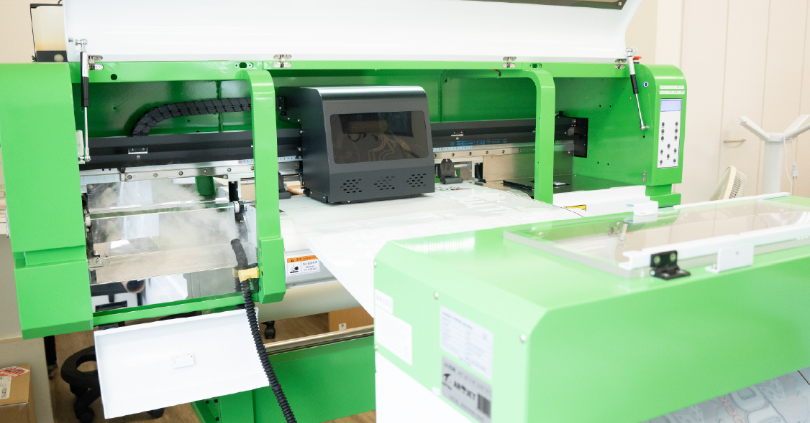
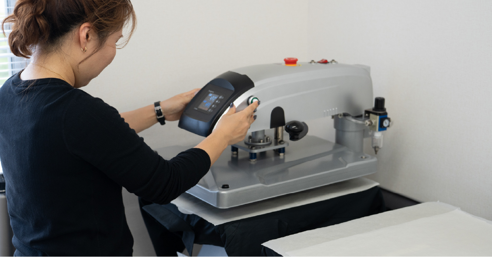
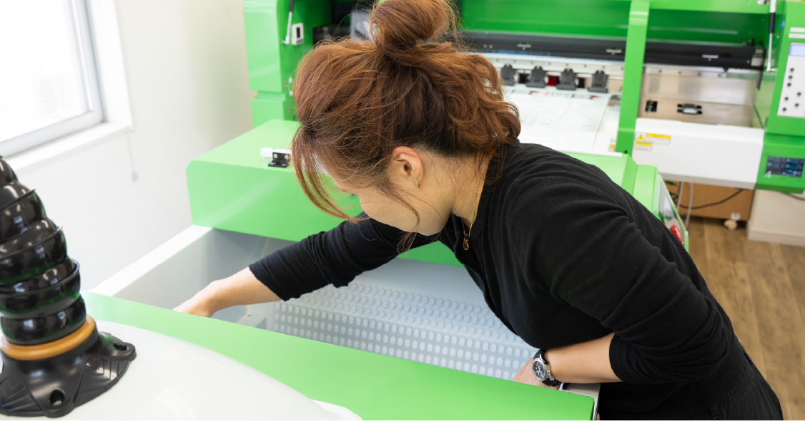
プリントワールドでは刺繍にも対応しています。会社のユニフォームの名入れから、オリジナルの
ロゴ入りTシャツなどにご利用ください。
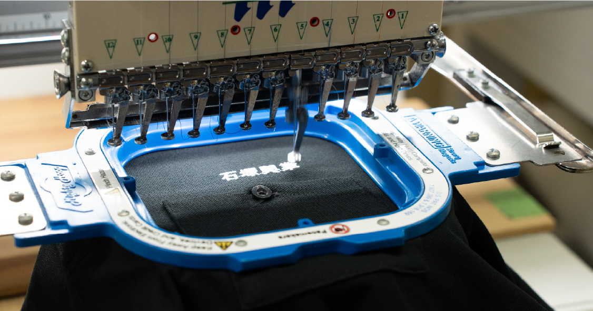
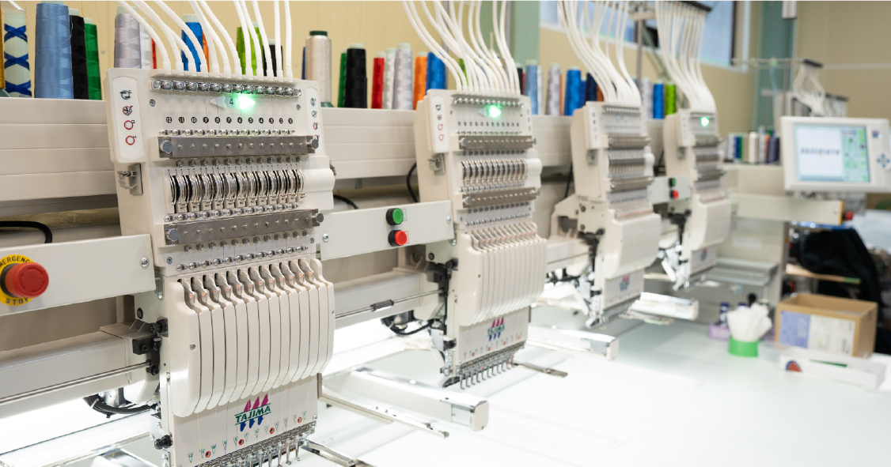
※
刺繍プリントをご希望のお客様はこちらからお問い合わせください。
刺繍の表現は細かなデザインが潰れてしまうため、写真が利用できないなど制限があります。そのため、専門スタッフが個別に
デザインのご案内をさせていただきます。
-
1mm以下のデザインや複雑な模様はご注意
1mm以下の幅のオブジェクト(線や文字含む)や1mm以下の隙間は、つぶれや擦れ、白の下地の表出が生じる可能性があります。
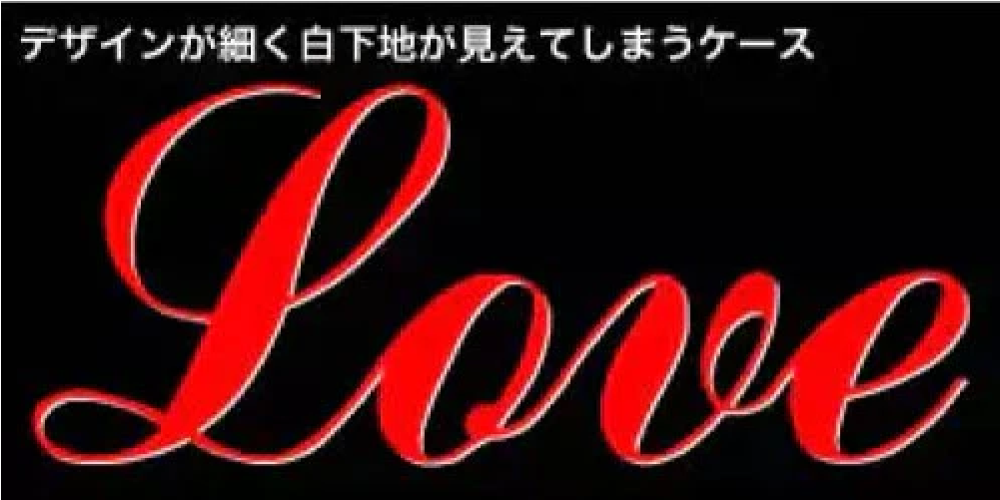
1mm以下の幅のオブジェクト(線や文字含む)や1mm以下の隙間は、つぶれや擦れ、白の下地の表出が生じる可能性があります。
-
ぼかし効果やグラデーションは原則不可
不透明度100%未満のデータ部分でも白下地がはっきりとプリントされてしまうため、透過処理によるぼかしやグラデーションが表現できません。
辺や線が垂直または水平ではなく、かつ低解像度の画像でアンチエイリアスがかかっている場合も、当該アンチエイリアス箇所も白下地プリントがなされるため、下地が表出することがあります。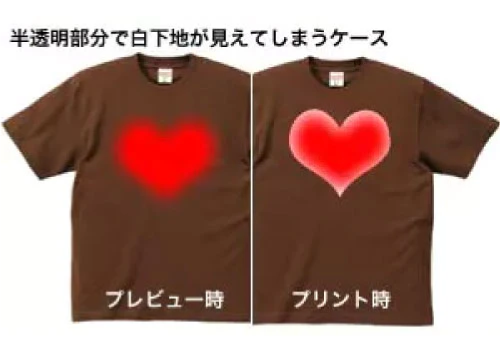
ぼかし効果やグラデーションは白下地が見える場合があります。
-
プリントしたくない背景画像は丁寧に除去を
画像編集ソフトで自動選択ツールで背景画像を選択して除去する場合、背景の選択が充分ではなく背景画像データが残ってしまうことがあります。
また綺麗に除去したつもりでもアンチエイリアスがかかっていて半透明部分が残ることがあります。
僅かでも濃度が0%ではないデータ(ほぼ透明だったとしても)があると、白の下地がついてしまい、仕上がりがご希望通りではない結果になる可能性がありますので、背景は丁寧に細かく除去してください。 -
不要なデータは必ず削除を
ご入稿データに(本当はプリントしたくない)データが残っていた場合でも、当該データの要不要を判断できないため、ご入稿データのままプリントしてしまいますので、不要なデータは必ず削除してください。
例えばデザイン作成時にデザイン確認のためにブラックの背景をつけていて、そのままブラックのボディに入稿されると、その背景色のついたデータのままプリントしてしまいます。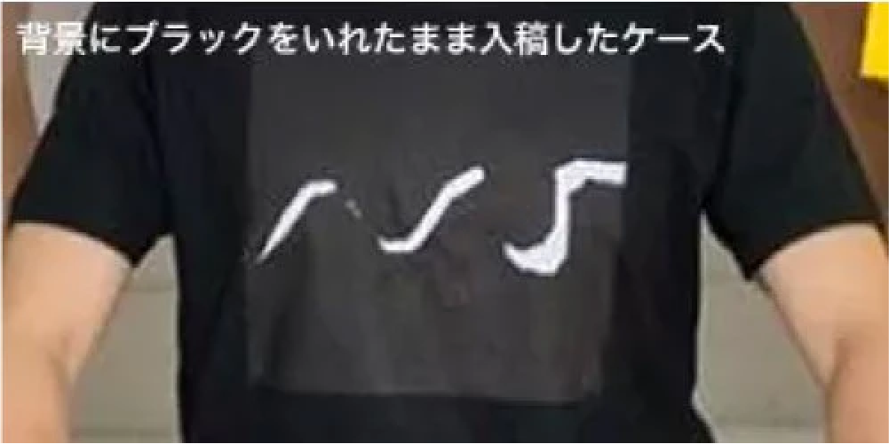
黒色の背景色がそのままプリントされてしまいます。
-
パスを含むデータ・効果を使用したデータは必ずラスタライズを
Adobe Illustratorなどを含むグラフィックソフトを使用し、パスを含むデータや、スウォッチ登録したパターン柄などの効果を使用したデータでラスタライズ(=1枚の画像データにすること)をしていないと、ご希望の仕上がりにならない可能性があります。
-
画像は解像度200dpi
写真データやイラスト画像データ等を実寸以上に引き伸ばして使用すると、仕上がりが粗く仕上がってしまいます。
ホワイトインクジェットで使用する画像は実寸で200dpiでご準備ください。
同一アイテム・同一データの注文でも仕上がりに差異が生じる場合がございます。
ホワイトインクジェットプリントをする場合、生地の色が白以外のTシャツなどのボディにはインクの定着性を高めることを目的に、必ず人体に無害な専用前処理剤による布地表面のコーティングをいたします。
さらに生地を平らにするためにヒートプレスをし、プリント後はプリント箇所を加熱乾燥処理をしています。
こうした液体の塗布及びプレス加工の工程を挟むことにより、お届けしたアイテムの生地色や形状によってはプレス跡や前処理剤跡が残ることがありますが、一度水洗いする事でプリントに影響する事無く除去できます。また、湿度の高い場所に長期間未開封のまま保管した場合や配送時の状況(雨の日や室温の高い時)によっては下処理剤が浮き出てくる場合がありますので、その場合も一度水洗いする事で除去できます。
(一度の水洗いやお洗濯で解消されない場合でも徐々に軽減します)
※なお誠に恐縮ながら、プレス跡や前処理剤跡の表出による返品・交換につきましてはご遠慮ください。
同一アイテム・同一データの注文でも仕上がりに差異が生じる場合がございます。
色の濃淡などに個体差が生じる可能性がございますが、アイテム自体の個体差や加工時の環境なども影響するため、加工の特性上完全に防止することができません。予めご了承ください。
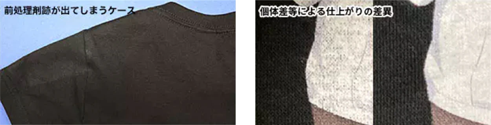
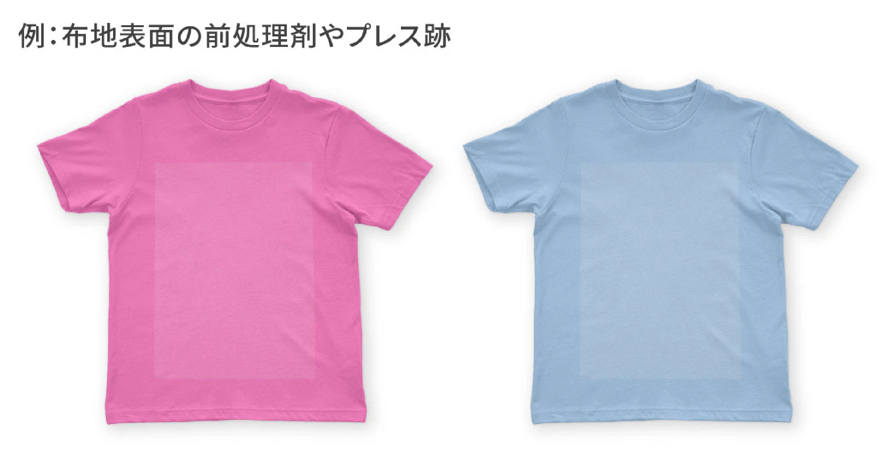
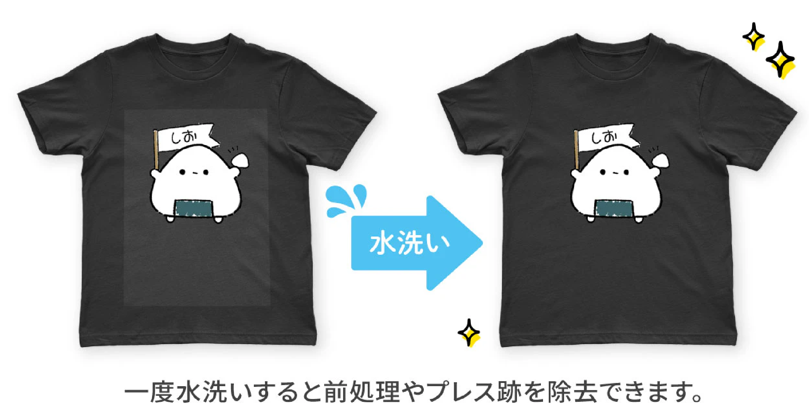
色の表現について
デザインデータの色について、PCやスマホのモニターでは色域の広いRGBで表現しますが、実際のプリントは色域の狭いCMYKで表現します。
そのため、RGB色域の鮮やかな色はCMYKでの近似色に置換されることになります。
またRGBで作る色は光の掛け合わせですがCMYKで作る色は実際のインクの掛け合わせになりますので、ご希望の色よりも発色度合や色彩度・明暗度等が異なってプリントされることがあります。また生地の種類によっても仕上がりカラーに差異が生じます。
プリントワールドでは、色の表現精度向上のため様々な取り組みを進めておりますが、色の忠実な表現について、ご希望にお応えできない場合があることを予めご容赦ください。